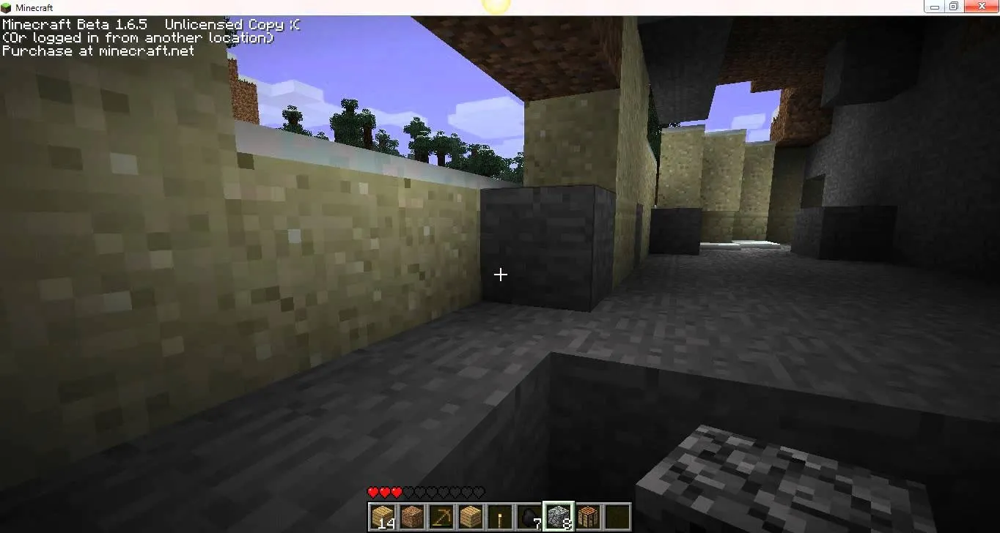
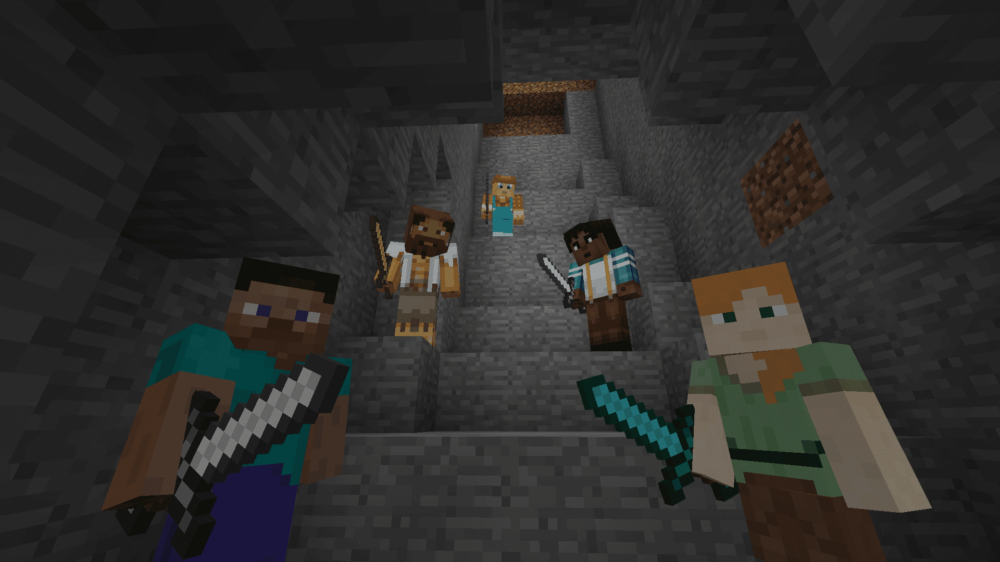

Sandbox / Survival / Crafting / Avventura

Se c'è un titolo che fa della libertà assoluta il suo punto di forza è Minecraft, un sandbox totale che lascia l'attenzione e l'immaginazione del giocatore completamente svincolate da binari. Il fulcro del gioco varia a seconda dell'approccio: puoi scegliere la modalità Sopravvivenza per raccogliere risorse, esplorare grotte e viaggiare tra le dimensioni fino a sconfiggere l'Ender Drago, oppure optare per la modalità Creativa, dove l'immortalità e i blocchi infiniti permettono di dar vita a opere architettoniche colossali.
La lama a doppio taglio di questa totale libertà è la facilità con cui si rischia di perdere lo stimolo, specialmente giocando in solitaria senza un traguardo prefissato. A questo si aggiunge la natura imprevedibile del mondo di gioco: basta una scivolata in una pozza di lava nei meandri di una caverna per veder bruciare l'intero inventario. Puoi essere abile quanto vuoi nei movimenti, ma l'esplosione improvvisa di un Creeper silenzioso alle tue spalle è sempre dietro l'angolo.
L'elemento che dona al titolo una profondità tecnica sbalorditiva è la Pietrarossa (Redstone). Questa componente si comporta come un vero e proprio circuito elettrico: sfruttando polvere, ripetitori, torce e pistoni, i player riescono a mettere in piedi automazioni incredibili, come passaggi segreti automatici, farm di risorse autosufficienti o addirittura computer logici funzionanti. È una meccanica che stimola incredibilmente l'ingegno, trasformando il gioco in una vera e propria piattaforma di logica.
